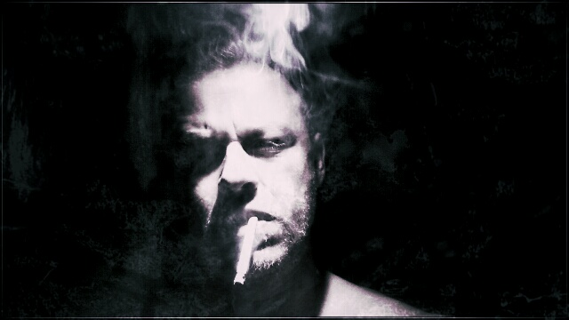

18 Down is the solo project of South African composer and multi-instrumentalist Charl Jordaan. Serving as a final technical ledger of a 32-year journey, the project fuses the raw energy of grunge, rock, and metal with the intricate structures of neo-classical composition.
Charl’s musical foundation began at age three on the recorder, transitioning to the flute at just five years old. This early start allowed him to tackle elite repertoire while still in primary school; by age 11, he was performing Claude Debussy’s Prélude No. 8: La Fille aux Cheveux de Lin, and by 12, he had mastered the technical summits of Wolfgang Amadeus Mozart’s Flute Concerto No. 1 in G major, K. 313 and Flute Concerto No. 2 in D major, K. 314. Along with his technical proficiency, he secured his Grade 5 Music Theory and Grade 7 Practical through the Royal Schools of Music by age 15, while serving as 1st flute in the Western Transvaal Youth Orchestra.
A significant head injury and coma at age 13 fundamentally shifted his trajectory. Formal classical performance no longer fit the internal landscape he was navigating.
Seeking a more fluid means of expression, Charl turned to Jazz, using its improvisational freedom and his theoretical background to break away from the rigidity of the syllabus. During this period of profound isolation, he also taught himself guitar and bass by ear — playing along to Nirvana — to articulate a sense of desolation and a landscape of complex emotions that were not yet understood. This era birthed the project’s opening track, “Don’t Fall,” written at age 13 and preserved on Memoirs of a Sinner with its original, unfiltered lyrics.
The 18 Down moniker — originally his dorm room number at age 17 — remained the constant thread as Charl moved through various bands. Struggling to find a group that could fully capture his vision, he eventually turned to total self-reliance. The 2026 archive documents this evolution: from early experiments on a Pentium PC using Cubase VST and ReBirth to the finalized, multi-layered sound of the current era. Utilizing 11 instruments, 18 Down is an honest, unvarnished record of a 32-year journey through the dark.